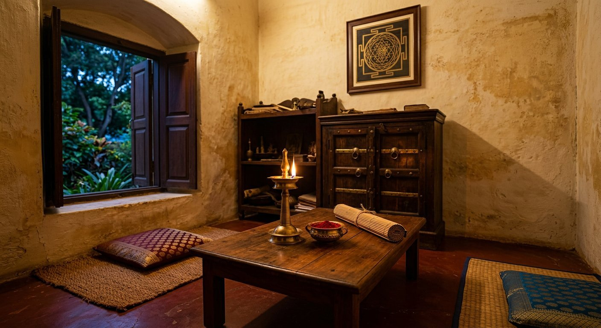

One pandit, start to finish
Your chart is read by Pandit Sri S Raju Poduval Tantri himself — the same person answers when you call back with a question.
 Nilavilakku
Nilavilakku Kundali
Kundali
॥ ഓം ശ്രീ ഗുരവേ നമഃ ॥ Kerala lineage · Jayanagar
Vedic astrology, prashna and vastu guidance from Pandit Sri S Raju Poduval Tantri — a Kerala tradition practised in Jayanagar 4th Block for over two decades. Unhurried, private, and explained in Kannada, Malayalam, Hindi or Tulu.
Choose a concern to see the reading that fits.
See the matched readingsNo call centres, no rotating "experts". The same pandit reads your chart, explains it in your language, and stays reachable while you follow through.
Figures for years, consultations and languages are as published by the practice; the rating and rating count are as listed on Justdial at the time of writing. Please verify current details by phone.
Every consultation follows the same discipline: listen first, look at the sky second, prescribe last. Nothing is ritual for its own sake.
നിങ്ങളുടെ ചോദ്യം, നിങ്ങളുടെ വാക്കുകളിൽ
You speak; the pandit listens without hurry. Relationship strain, a stalled marriage, money that will not settle, a home that feels heavy — say it plainly. Nothing is too small and nothing leaves the room.
ജന്മകുണ്ഡലിയും പ്രശ്ന ലഗ്നവും
Birth date, time and place become a working chart. Where birth time is unknown, the prashna chart — cast for the moment of asking — is used instead. Transits of the slower planets are weighed against your dashā periods.
യഥാർത്ഥ പ്രശ്നം കണ്ടെത്തൽ
A careful reading names the pattern — a dosha, a weak house, a timing window, a direction in the home — and explains it in ordinary language. You are told what is likely, what is not, and where free will still decides the outcome.
ചെയ്യാൻ കഴിയുന്ന പരിഹാരം
Remedies are chosen for your household, not for spectacle: a mantra with a fixed count, a simple daanam, a muhurtham to wait for, a gemstone only where it genuinely suits the chart. Follow-up is by phone or WhatsApp.
Each area is a lens, not a menu item. The reading you receive is shaped by your chart — these are simply the questions people most often bring to the desk.
Drag, swipe or use the arrows · tap a card to ask on WhatsApp
In vastu shastra the plan of a house is read the way a kundali is read — by direction, element and the rooms where life actually happens. Turn the compass to see what each quarter traditionally governs.
Traditionally associated with Kubera and the water element. The north is read for income, opportunity and the flow of money through the household — which is why entrances, water sources and mirrors in this quarter get a careful look.
Astrology is often sold as certainty. Here it is offered as counsel — a second, older viewpoint on a decision that is still yours to make.
Your chart is read by Pandit Sri S Raju Poduval Tantri himself — the same person answers when you call back with a question.
Ask in the language you think in. Nuance matters more than translation when the subject is family.
Consultations are one-to-one. Nothing discussed at the desk is repeated, published or used as promotion.

First floor, opposite Sri Venkateshwara Garments, 10th A Main Road — a short walk from Jayanagar 4th Block.
Many families consult from outside Bengaluru, or from outside India. Birth details and the question can be sent on WhatsApp, and the reading is given over a call at an agreed time.
A visual note on the tradition the desk works within. Tap any frame to see it larger. These are original illustrative photographs of the tradition — not photographs of the premises.
We have not published testimonials here — the reviews already live on Justdial, written in visitors' own words. Read them there, then call if the approach suits you.
As exact as your family remembers — even an approximate hour narrows the reading. If you already have a kundali, bring or send a photo of it.
"Will my marriage happen?" is a start. The reading goes deeper when you also say what you fear, and what you have already tried.
Astrology is treated here as counsel, not a verdict. You will hear timing, tendencies and remedies — never a guarantee that takes your decision away.
The form does not store anything. It simply prepares a WhatsApp message you can read, edit and send when you are ready.
"Ask clearly, listen carefully, prescribe sparingly."
The discipline of the desk
Tell the pandit the situation in one sentence. He will tell you whether a reading is the right step.
If something is still unclear, call — a short conversation usually settles it faster than a message.
Yes. Many consultations are given over a phone call or WhatsApp. Send your birth details and the question in one message, and a time is arranged for the reading. The desk also lists on-phone service on its Justdial listing.
Date, time and place of birth. The closer the birth time, the sharper the reading. If the time is unknown, a prashna chart cast for the moment of asking is used instead — it is a different method, and the pandit will say so.
Kannada, Malayalam, Hindi and Tulu, with English for written messages. Speaking in your own language is encouraged — small nuances change the reading.
Consultations are one-to-one and treated as private. Nothing discussed is published, recorded for promotion, or shared with a third party. The form on this page stores nothing — it only prepares a message in your own WhatsApp.
Remedies are suggested, not sold from a shelf. Where a gemstone genuinely suits the chart it will be mentioned, with the reasoning; where a simple mantra or daanam is enough, that is what you will hear. You are free to decline any remedy.
The Justdial listing shows the desk open until 8:00 PM. Timings can change with festival days and travel, so please call +91 98444 50099 before visiting — especially for a first consultation.
Yes — homes, shops and small offices. A hand-drawn floor plan with north marked is enough to begin. Vastu is listed as one of the practice's specialities on Justdial, alongside kundali matching and palm reading.
First floor of Sri Guru Raghavendra Complex, opposite Sri Venkateshwara Garments, on 10th A Main Road just off Sub Register Office Road.
Sri Guru Raghavendra Complex, 604/21, 10th C Main, 30th Cross, Sub Register Office Road, opp. Sri Venkateshwara Garments, Jayanagar 4th Block, Bengaluru 560011
Listed as open until 8:00 PM (Justdial). Festival days and travel can change this — please call before visiting.